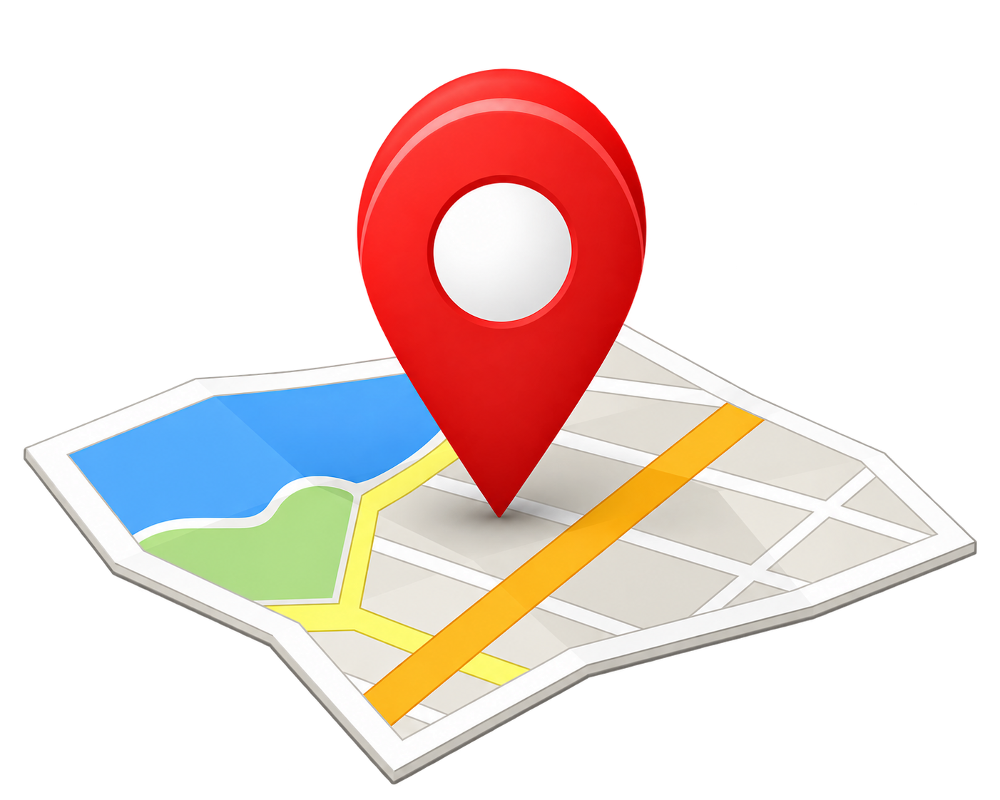

오늘의 서울에서, 나만의 장면을 발견하다.전시부터 공연, 팝업까지. 도시의 모든 문화를 한곳에.
익숙한 골목에서 우연히 마주친 전시, 심장을 뛰게 하는 무대,오늘만 만날 수 있는 특별한 공간. 당신의 다음 장면을 찾아보세요.
새로운 시선으로 마주하는 서울의 예술
음악과 무대가 만드는 가장 뜨거운 순간
짧지만 오래 기억될 새로운 경험
서울에서 함께 즐기는 특별한 순간
달력에서 날짜를 골라보세요.
성수, 연남, 한남, 대학로까지.동네마다 다른 문화의 결을 만나보세요.
